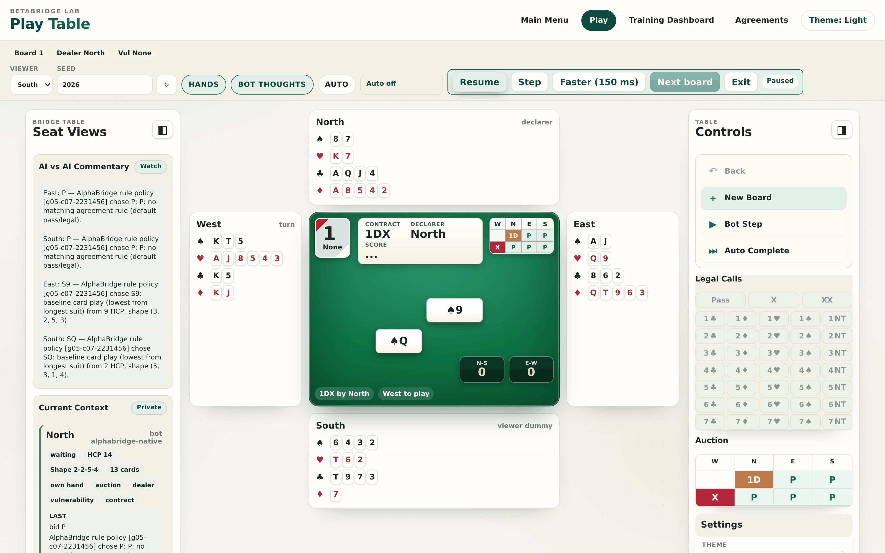
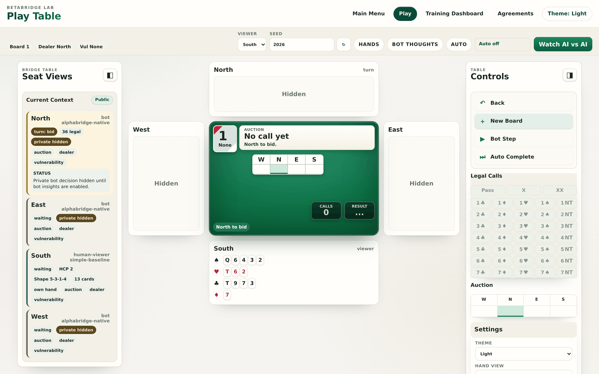
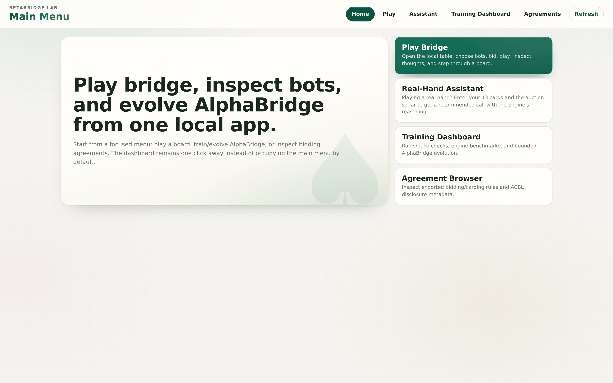

Personal project
BetaBridge
A bridge AI that taught itself to bid.
No neural net priors, no human conventions baked in — a genetic evolution loop discovers a tournament-legal bidding system from pure noise, then explains every call it makes.
A real bridge table, honest by construction.
A full duplicate bridge engine runs in the browser: dealing, auction legality, trick resolution, duplicate and cross-IMP scoring. Hidden information is enforced at the architecture level — each seat sees only what the laws of bridge allow, and the dummy stays face-down until the opening lead.
Flip on bot thoughts and the AI narrates each decision as it makes it; Watch AI vs AI lets a whole board play itself.

The discovery
It invented its own bidding system.
Evolution starts from random noise. Generation after generation, candidate genomes play duplicate-field tournaments against 2/1, Precision, and GIB-style anchors — human systems are opponents, never teachers. What survives is a bidding language no person designed, exported with full ACBL disclosure metadata: every call announced, every alert marked.

Every call explains itself.
A feature that can’t be explained to the player isn’t done. Tap any call to read its decoded meaning; seat panels show exactly what each player is allowed to know; the real-hand assistant recommends a call for your own 13 cards and tells you why.
The agreement browser is the single source of truth for what every strategy bids — the evolved AI included.

A lab, not a black box.
Determinism is a first-class invariant: the same seed reproduces the same deal, auction, play, and evolution result, byte for byte. Training runs are budget-guarded, benchmarks gate every optimization, and the dashboard puts smoke runs, engine throughput, and evolution leaderboards one click away.
Everything runs locally on a laptop — no services, no GPUs, no installs.

Under the hood
http.server is the whole backend.Try it yourself.
The read-only lab is hosted right here — browse the discovered bidding system and the dashboard rebuilt from the latest artifacts on every deploy.
Playing a board needs the local engine. One clone, no installs:
$ git clone https://github.com/shengchao-lin/BetaBridge.git
$ cd BetaBridge
$ python3 main.py play-ui